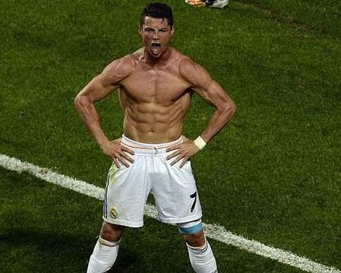
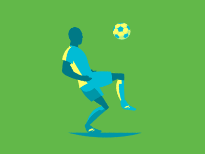
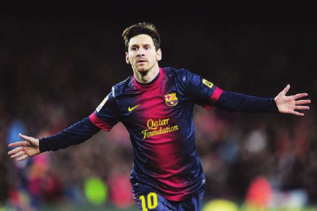
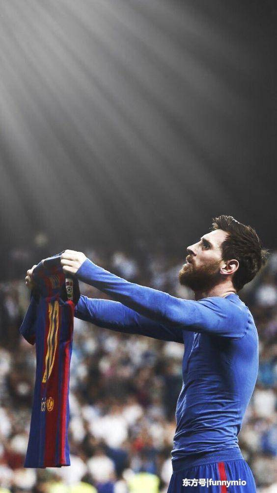

克里斯蒂亚诺·罗纳尔多
简介
克里斯蒂亚诺·罗纳尔多·多斯·桑托斯·阿韦罗（Cristiano Ronaldo dos Santos Aveiro），简称“C罗”，1985年2月5日出生于葡萄牙马德拉岛丰沙尔，葡萄牙职业足球运动员，司职边锋／中锋，效力于意甲的尤文图斯足球俱乐部。
运动生涯！
俱乐部生涯青训时期
1991年，7岁的C罗加入了葡萄牙马德拉岛一家名叫安多里尼亚足球俱乐部的业余俱乐部，当时他的父亲在那里担任设备管理员。他的表现引起了马德拉国民足球俱乐部的注意，于是C罗加入了该俱乐部。
1998年，葡萄牙体育以1500英镑引进了年仅13岁的C罗；2001年，他成为葡萄牙体育队史上第一个在同一赛季同时进入俱乐部U16、U17、U18、二线队和一线队的球员。
葡萄牙体育时期
.......
了解更多THERABODY™宣布签约足球巨星克里斯蒂亚诺·罗纳尔多
全球科技健康领导者,Theragun®筋膜枪缔造者 Therabody在六月重磅宣布,签约足球巨星克里斯蒂亚诺·罗纳尔多,出任 Therabody 最新合作运动员。双方达成合作,为 Therabody 全球品牌活动拉开序幕,作为迄今为止规模最大的一项全球活动,将在美国、英国、欧盟、加拿大、澳大利亚、中国和日本同时展开。
作为全球扬名的顶尖射手,C 罗的球场掌控能力和追求完美精神令人赞叹,如何在强手环伺的丛林法则中保持全球最佳地位,C 罗将全身恢复放在首要位置。C 罗透露自己的职业长青部分归结于采用最先进的技术恢复身体。Theragun 作为首款手持冲击式按摩设备,有助于加速恢复,防止伤病,提高整体运动表现,因此成为 C 罗的日常恢复利器。C 罗已经习惯性使用该按摩设备,尤其用于腿部和足部恢复,有力证明了 Therabody 的功效,成为行业领先方案。
“我的身体就是我决胜的武器。”C 罗表示,“想要出色表现,你需要更高程度地恢复。所以我选择 Therabody。”
在 2017 年,C 罗首次了解Theragun , 当时 Jason 医生在皇马俱乐部向运动员和教练员示范了这一设备。C 罗是 Jason 医生见到的第一个在足底使用 Theragun 按摩球的运动员,这也激发了 Jason 医生创造全新恢复方案。Jason 医生指导 C 罗如何最好地发挥 Theragun 的优势,帮助其加快日常恢复,成为 C 罗值得信赖的恢复顾问。
“C罗是我们终身学习的典范,他总是在不断探索新方法保持身心健康,在自己的领域终成一代宗师。” Therabody 创始人兼首席健康官 Jason Wersland 医生评价道,“为保持巅峰状态,必须不断寻找最佳恢复方法,我有幸在探索之旅中助他一臂之力,同时也改善了他周围人的恢复状态。”
C 罗将与 Therabody 合作宣传全身恢复的意义,向足球界普及 Theragun 的优势。通过与 C 罗等传奇运动员的合作,Therabody 也希望向广大消费者推广原本仅用于专业运动员的恢复技术,从而使他们有能力更好的对健康和恢复进行自我管理。
视频了解！
---------------------------------------------------------------------------------------------------------------------------分割线-----------------------------------------------------------------------------------------------------------
里奥·梅西

简介
莱奥·梅西（Leo Messi），正式名利昂内尔·梅西（Lionel Messi），全名利昂内尔·安德烈斯·梅西·库西蒂尼（Lionel Andrés Messi Cuccitini），1987年6月24日出生于阿根廷圣菲省罗萨里奥，阿根廷足球运动员，司职前锋，效力于西甲巴塞罗那足球俱乐部，亦担任球队队长。
早年经历！
5岁时，里奥·梅西开始在当地的街区少年足球队踢球，教练就是他的父亲。
11岁时，梅西被诊断出发育荷尔蒙缺乏，也就是生长激素分泌不足，会阻碍他的骨骼生长使他无法长高。家里的经济条件难以承受小梅西的治疗费用。梅西的侏儒症并非不可医治，但是注射生长激素每月花费高达900美元，母队纽维尔老伙计不愿意为一个前途未卜的孩子支付这笔费用，一度觊觎梅西的河床队得知他的顽疾后也打消了“挖角”的念头。
运动生涯
俱乐部生涯青训时期
2000年，梅西被教练库卡看中，被带到了巴塞罗那，梅西也举家搬迁到西班牙。9月，年仅13岁身高只有140cm的梅西去了巴塞罗那青训营拉玛西亚试训。在试训期间，梅西的表现征服了巴萨青年队教练，他们与梅西签订了一份2012年才会到期的工作合同。巴塞罗那俱乐部在帮助梅西成长方面作出了巨大的努力，由于梅西的骨骺线早已闭合，俱乐部专家专门为他制定了腿部系列运动，帮助梅西生长。
1998年，葡萄牙体育以1500英镑引进了年仅13岁的C罗；2001年，他成为葡萄牙体育队史上第一个在同一赛季同时进入俱乐部U16、U17、U18、二线队和一线队的球员。
国家队时期
.......
了解更多 梅西的励志故事
他从小就喜欢足球，但10岁那年的一件事，却给了他很大的打击。当时他在纽维尔老男孩队参加训练。
一天下午，他所在的球队和另外一个同年龄段的球队进行足球比赛。好几次，队友都把球传到了他的脚下，但由于过度紧张，他面对球门时竟闭上了眼睛，这样造成的结果是球总是擦门而过。由于他的多次错失良机，他的球队最后惨败。终场结束，他痛苦地闭上眼睛。
在更衣室里，好多伙伴把手指放在嘴边，对他发出嘲笑的嘘声。他换下来的鞋子也被一个同伴拿走，往里面吐口水，然后得意地给其他小伙伴展示，并现场给他起了一个外号“臭鞋大王”。他难受极了，心想也许自己根本就不是踢球的料，干脆放弃算了。
他低着头，心烦意乱，一个人孤单地走在回家的路上，忍不住哇哇大哭。
这时他看到一只青蛙正好奇地看着眼泪汪汪的自己，他有些生气，恶作剧般地朝青蛙撒了一泡尿。但他发现，在这个过程中，那只受辱的青蛙一直保持着一个姿势，仍鼓着一双圆眼看着自己，没有躲闪，没有逃离。
他有些疑惑，也有些失落，怏怏不乐地回到家里，把今天发生的一切都原原本本地告诉了父亲。父亲告诉他，一个人要想，就要像那只姿态昂扬的青蛙那样，正视不公，接受失败。
那天晚上，他的心灵被震撼了，他内心的梦想开始复苏，他觉得那只受辱而不屈的青蛙就是自己的老师。
他暗暗发誓：我也要在逆境中努力，进的球队，成为像马拉多纳那样的伟大球员，登上足球的顶峰，成为世界足球先生!从那天起，他每天踢球8个小时以上，有条不紊地坚持学习和训练。教练的批评，队友的指责，他都能坦然面对，自信地昂起自己的头，一步步地走自己的路，他的眼里只有一个目标：球门。
一年后，他遇到了的又一个坎。11岁的他被诊断出发育荷尔蒙缺乏，而这会阻碍他的骨骼生长。家里的经济条件难以承担他的治疗费用，但乐观努力、积极向上、球技不断完善的他受到了巴塞罗那球探的青睐。2000年9月，年仅13岁身高只有140厘米的他受到邀请，去巴塞罗那试训。试训场上的他，像那只执着的青蛙一样紧紧盯着目标，连中三元。试训刚一结束，俱乐部负责人就毫不犹豫地给他在俱乐部注册并安排他去的医院接受治疗。在当年他参加的38场青少年比赛中，他一共打入31个进球。
世青赛一向被认为是才俊展示自己的舞台。当第15届世青赛的大幕在荷兰乌德勒支缓缓落下时，他，一位身高只有1.69米的阿根廷少年将一个巨人的背影留给了全世界。由于阿根廷队在小组赛中的糟糕表现，人们都以为这支队伍难以走得更远，然而正是他的出色表现挽救了全队。作为阿根廷队的灵魂人物，他从淘汰赛开始一直处于世青赛的舞台中心，最终率领阿根廷U21青年队获得世青赛冠军，他自己也获得世青赛的球员称号。2005年年底，在意大利体育报纸《全体育》组织的“金童奖”的评选中，他更是以压倒性的优势击败鲁尼当选2005年度的欧洲新秀。
他的名字叫里奥·梅西，现为巴塞罗那的前锋球员以及阿根廷的国脚，他被球迷亲切地称为“新版马拉多纳”，他用近乎完美的球技实现了自己的誓言。2009年12月1日，梅西凭借2008-2009赛季带领巴塞罗那取得西甲、国王杯、欧洲冠军联赛三冠王的成绩，击败C罗获得2009年欧洲金球奖。20天后，在苏黎世举行的第19届国际足联颁奖典礼上，里奥·梅西笑到了最后，获得“2009年世界足球先生”称号，捧着金灿灿的奖杯，他微笑着说：“不要闭上眼睛踢球，要紧紧盯住自己的目标。只要努力，梦想就离你不远了。”
让我们记住梅西的导师，那只遭受尿击仍然仰头鼓眼的青蛙。 集中注意力，拼上所有的力量，朝着目标不懈努力，矢志不渝，不在意别人的打击和嘲笑，只要自己有目标，有无比积极的态度，不放弃，肯用心，终究会走出困境。这个世界会接纳你，梦想也会一步步成为现实。
视频了解！

~~~~~~~~~~~~~~~~~~~~~~~~~~~~~~~~~~~~~
~~~~~~~~~~~~~~~~~~~~~~~~~~~~~~~~~~~~~
